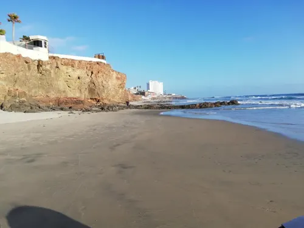
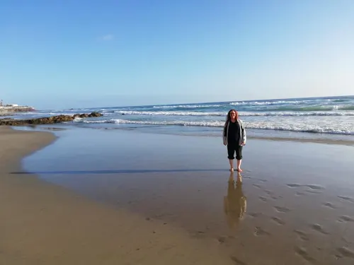
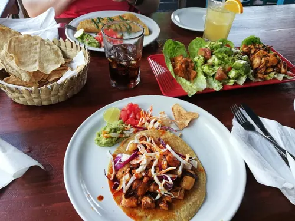
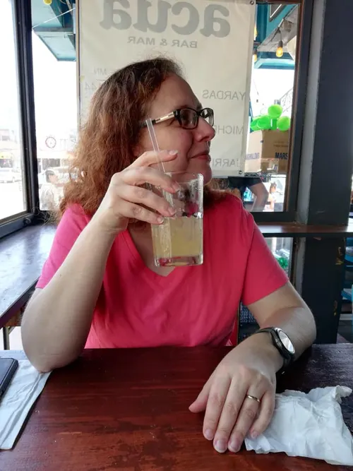

Mexico
2019

In 2019 I spent time on a Mexican beach with my redhead companion.
Days covered the shoreline under the cliffs, a walk on the wet sand, and a long lunch.










2019
In 2019 I spent time on a Mexican beach with my redhead companion.
Days covered the shoreline under the cliffs, a walk on the wet sand, and a long lunch.



